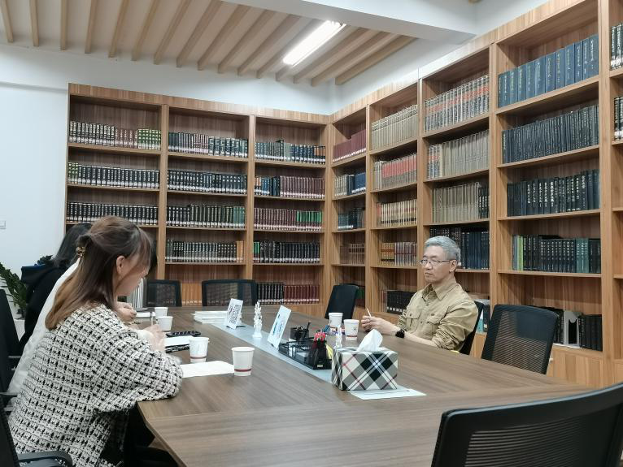
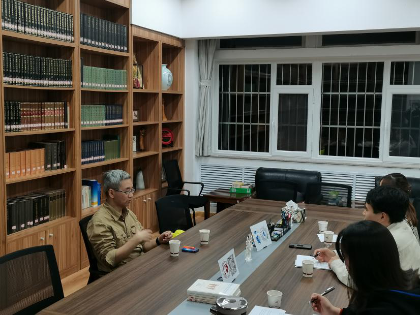
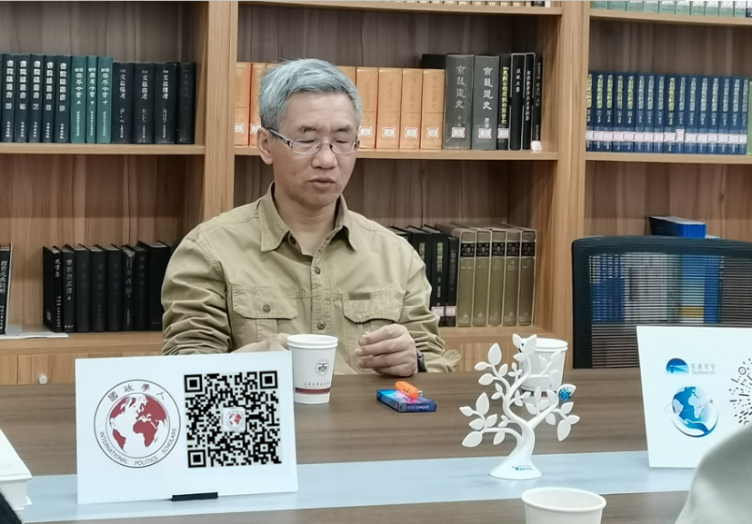
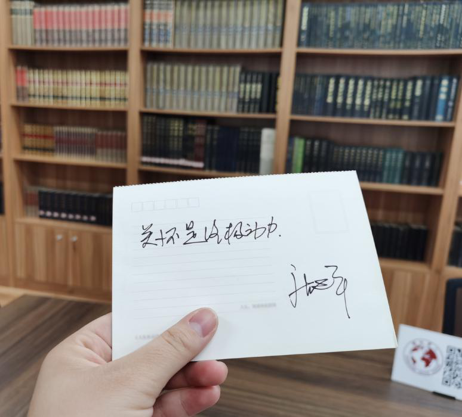
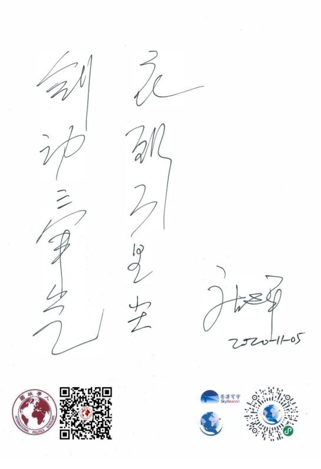
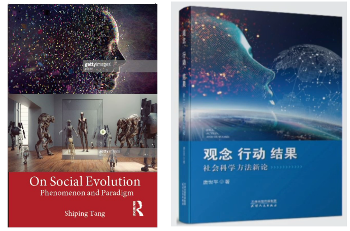

收录于合集 #名家访谈 6个

编者按
唐世平教授有着丰硕的学术成果、传奇的经历、鲜明的个性，是当今中国乃至世界社会科学学界最有创造力的学者之一。在涉足计算社会科学领域后，唐世平教授带领的团队完成了包括本次美国大选在内连续多次选举活动的精准预测，这更是再次让他走向“神位”。
一次次的转型背后，唐世平教授经历了怎样的心路历程？选举预测技术的进步对社会科学的发展意味着什么？社会科学的从业者如何做出好的研究？对于年轻的国政学人们，唐世平教授又有着怎样的寄语？ “国政学人·名家专访” 第一期带大家走近唐世平教授。
【本期嘉宾】
唐世平教授
唐世平：复旦大学特聘教授、“陈树渠”讲席教授、教育部“长江学者”特聘教授、“掌中星球”新一代旅游商业平台的创始人兼CEO。唐世平教授是当今最具国际影响的中国社会科学家之一，也是当今亚洲最优秀的社会科学家之一。他研究领域广泛，覆盖国际政治、比较政治与政治理论、制度经济学、社会科学哲学、计算社会科学等，并在上述领域做出了世界水平的研究。迄今为止，唐世平教授已经出版英文专著四部、中文专著一部、英文编著一部、中文编著一部。其中，他的著作《国际政治的社会演化》(牛津大学出版社，2013年)于2015年获得国际研究协会(ISA)年度最佳图书奖。此外，他还有多篇英文论文发表在研究领域内顶级国际期刊上。
国政学人： 您传奇的个人经历一直为我们后辈们所津津乐道，您当时下定决心从生物学转型到国际关系就用了两三天的时间决定，也没有跟任何人商量，这种决定在现在看来都是十分的“任性”，更不用说是在20年前。请问您当时的心路历程是怎样的呢？
唐世平教授： 1995年，我在美国读博士后的过程中，发生了台海危机。当时我很幼稚地认为：中国需要像我一样在美国呆过一段时间，自认为比较了解美国政治的人。于是，我就萌生了一个想法：读个硕士，然后进中国的外交部。但一个学期后，我发觉自己更适合作一个理论学者。因为我在那时就可以发现谢林、杰维斯等人的理论漏洞。 发现别人理论的漏洞是创造新理论的基础之一。 而且后来我知道外交部做不了太多政策建议的工作，所以我还不如进社科院这种能做政策建议的部门。我很感谢我的恩师—— 张蕴岭 老师，他为我这个半个外行提供了难得的机遇。
对“改行”而言，可能是因为我对自己的智力有着高度的自信，读书对我来说一直是一件比较容易的事情。再说，我既然已经改过一次行了——从地质到生物，那么再从生物改到政治，也没什么大不了的。这是最重要的原因。次要的原因，在生物学上，我错过了一次珍贵的机会。我从小就觉得自己应该得诺贝尔奖，我19岁的时候有机会发Nature，但丧失了这次机会。所以我在很多场合都会讲， 我们 人生的机会其实很少，不要浪费任何一个伟大的机会或者重要的问题。 对于“任性”这个词，“任性”是我一直以来的性格，我从小就比较独立和“反叛”。
国政学人： 现在许多同学在学习阶段都对自己的前路规划问题十分迷茫，而且感觉这个社会给年轻人“试错”的机会越来越少，年轻人们也越来越不敢放手追随自己的兴趣，而是不断的去追赶“卷入”所谓的热门领域与专业，难以在现实的压力与兴趣的吸引力之间做出平衡。您怎么看待这个问题呢？
唐世平教授： 人肯定要考虑现实的问题，但考虑现实也不一定就意味着一定要放弃某些关怀。从事迫于现实的事情，其实也是培养兴趣和积累人脉的过程，这些将来都有可能会有用。 关键是：How much do you want that？你有多想要实现你的梦想。 比如说，细胞起源问题对于我来说就是梦中情人，因为我认为这是一个fundamental的问题，这种事情就值得去追求。我最近也写了一些关于细胞起源问题的文章。
我始终认为决策是可以优化的，因此，转行这种问题而言其实可能没有那么难。 随着经历、阅历、能力的提升，你会发现其实追求自己的一些梦想也并没有那么糟糕。 但这也确实需要一定的基础作为支撑：如金钱、人脉、能力等，这些需要自己进行评估。
所以，我认为在大学中最关键的并不是学到具体的知识，而是培养一套思考世界的方式，认识一群优秀的人。因为没有人能够独立做任何事，即便是学问。学问看起来是一个人做的，但其实也吸收了很多人的智慧。在这个过程中友谊是很宝贵的财富。很多人可能会误解我，但我下面要说的这句话也恰好表明我特别谦虚： 一定要觉得与比你优秀的人在一起，这是一种荣幸和快乐。 而不要因为他比我强，就觉得难受，这样是不好的。只有周围的人比自己强，或者至少在某些地方比自己强，这样才有做事情的动力。当然，人脉并不一定是有意为之进行拓宽的，很多时候都是非常偶然的机会。 当你带着一种平和谦虚、愿意学习的精神，就会接触到比自己优秀的人，人脉也会在不自觉中拓宽。

国政学人： 在外人看来您每一次的转型跨度都非常大，但您在每一次的“转型”之中仿佛都能从上一段的经历中汲取能量。这种交叉学科的背景对您的科研工作和创业有什么样的影响呢？
唐世平教授： 影响是非常多的，但又很难清晰全面地描述出来。其实最重要的是一种思维方式，或者说是独特的能力。 学科的交叉培养了我一种思维长处，就是能够把 很多看起来不相关的东西放在一起思考。 在之前的博文中，我曾经提到“对科学问题的钻研的能力（通常说的“天赋”），大概有两种（或者说是两个维度）”。一个维度是像爱因斯坦、拉马努金、或张益唐这样，能够把一种抽象的问题想到极致深刻，大部分人崇拜这样的天赋（我也崇拜）。另一个维度是“connecting things”（就是把看似毫无联系的东西连起来，并且洞察它们之间的联系）。达尔文就是第二个维度的典型代表，他能够把很多学科的知识攒在一起去思考，比如“人从哪里来”“生物的适应性”。这也是我推荐给大家贾雷德·戴蒙德的《枪炮、病菌与钢铁》这本书的原因。
这种能够把不相关的知识融合在一起的能力有时需要自我发现，有时也是一种训练。跨学科学习也是给我训练这种能力的机会。当前高校非常流行的“跨学科”培养人才的方式是非常有意义的，对培养这种connecting things的思维维度很有帮助。
国政学人： 您认为随着选举预测机制的不断完善和发展，是否目前看来是“黑天鹅事件”的一些问题（如英国脱欧）在将来也可以被预测？
唐世平教授： 不同的问题的可预测性不同。很多时候很多事情不是说只要有大数据就能搞定，这基于你要回答的是什么问题，用什么数据。 比如我们的选举预测，这其中并没有大数据，但是计算量确实很大。我们一开始可能有3000万个模型，甚至3亿个模型，这需要巨大的计算量，但是它不一定是大数据。要解决不同的预测问题，需要用不同的方式，所用的数据也是不一样的。
英国脱欧和美国的选举是两类不同的问题。英国脱欧是一种临时性的动议，它不是regular的东西，而美国大选它是很regular，4年一次。我认为后一种更加容易基于ABM来做。英国脱欧这类问题，可能也没有更好的办法，靠民调还是比较好的。
但是， 民调肯定是需要克服一些重要的缺陷，才能做到更好的预测。 现在很多民调在逐渐吸取这些教训，可能会越来越好。总之，就公投这类问题，因为这些问题是临时性的动议，不太适合用ABM这种技术去预测。对这类事情的预测，估计主要还是要依靠（更加好的）民调或者类似的舆情数据。
国政学人： 您认为预测技术的发展对社会科学有什么影响呢？社会科学在可预测领域（如美国大选）的功能正从“解释+描述”向着“预测+对策”的方向前进呢？
唐世平教授： 就预测对社会科学的发展方向的影响而言，我相信已经是“进行时”，而且将会是一个越来越显著的趋势， 这也是为什么我们很早就开始做这方面的尝试。这种东西当然需要探索，但我认为这肯定是一个非常重要的领域和趋势，而且未来的很多发展将会表明原来我们觉得不可能的事情其实是可能的。当然，这不意味着解释不再重要。事实上，解释（或者说理论）对于预测是有重要帮助的。

国政学人： 您认为我们从事社会科学研究和学习的人，应该如何处理学术研究与政策研究之间的关系呢？
唐世平教授： 当年我在社科院工作的时候，做很多政策研究工作，自认为也做得不错，但是我觉得做得还是不够好。学者对于政策的追求是应该的，甚至是必要的。为什么？ 因为我们是社会的一员，我们都是某一个国家的一个公民，那么这个国家的福利、国家的好坏和我们每一个人都息息相关。
作为一个学者，我们当然应该关心国家和人民的福利，所以我们应该追求对某些政策的影响。 但是我认为这并非意味着要直接追求对某一个短期政策或者是中长期政策的影响，很多时候我们学者能够追求的某些影响并不是直接写成政策建议。比如你可以通过间接地影响学生，也有可能间接的政策影响，如果说在座的各位有人以后会进入中国的某个政策部门或者是某个智库，那么就可以产生影响。当然还可以通过影响思维方式，通过科普，影响了大家对社会科学和政策之间的关系的理解，这样的理解，它也具有一定的间接的潜移默化的影响。
我想要特别强调的是，即便你要解决一个政策性的问题，也要基于科学的理论。 其实所有的政策问题都可以归结为一个科学问题。比如，你说中国要做a要达到b的结果，马上我们就会问你，你怎么知道？或者为什么你认为中国做了a就一定能达到b的结果？这个时候背后还是科学的一个问题。所以不管你是否带有意识形态，如果你对问题的回答不能够给出科学的支撑，你最后给出的政策建议可能是错的。那么这个时候即便是你这个政策确实被采纳了，但是导致的可能是国家的灾难。所以我个人认为所有的政策建议都必须基于的科学的理论。其实所有的政策背后都是一个小的科学理论，这个时候就要求你在获得科学解释或者科学理论的过程中，坚持的是一个科学的方法。 在不同的问题上，你采取的科学的方法可能会有不同的结合，但是根本意义上它还是scientific，是科学的，你不能是玄学的方法。

国政学人： 对于我们社会科学的从业者和学习者而言，应该如何做好的社会科学呢？
唐世平教授： 我认为这个还是有一些基本的经验。
第一，要有大的关怀，要关怀世界，至少要关怀中国。 大家不要为了发文章写书来研究社会科学，一定不能这样。那样的话，你会很累，而且坚持不下去。一定是我觉得这个问题对中国人民的福祉是有意义的，我才去研究它。
第二，要思考一些根本性的问题。 做好的社会科学需要思考一些“杞人忧天”一样的问题，应该总是去思考一些有一定根本意义的问题。
第三，必须有足够的研究技能。 这些技能包括现在我们经常说的定量定性，以及各种各样的方法，然后你要有非常广泛的阅读。确实要读得足够多，甚至要读得足够快，要练习速读。速读是可以练习的，我的阅读速读大概能一分钟读250~350个单词。
第四，先从中等的、小的问题开始。 在学生时代，在硕士时代、博士时代，不一定非要去解决特别大的问题，不要一上来就开始大而化之，或者说你至少要学会把一个大的问题变成可以操作的研究问题，小的问题。
第五，要脚踏实地做研究，不要老是批评别人。 就像世界上蹩脚的文学批评家总是很多，好的作家总是很少，批评别人是很容易的。我们不要总是觉得这个不行、那个不行，而要自己做给大家看，让大家觉得你的研究好，这是困难的。
第六，当然也要虚心学习。 可能我要说我自己特别虚心，大家都会觉得可笑。其实我真的很谦虚，我去听过别的老师的课，我不懂的我都去学，很多东西我都不懂。当你知道的东西越多，你就知道自己不知道的东西也越多。
国政学人： 您创业的事当时在各界都引起了比较大的轰动，您当时说过掌中星球是“计算社会科学”的一个应用。我们看到，随着掌中星球的发展，这个应用不仅为大家带来出行决策方面的便利，您也通过这个平台积极推广家乡的特产为家乡“带货”谋福利。请问您做掌中星球的初心是什么呢？
唐世平教授： 我在伯克利念书的那两年是美国的第一个互联网泡沫时代。我的许多同学朋友都在做互联网，我肯定属于可以最早用到EMAIL的那一批中国人，所以我对互联网一直是感兴趣的，但是我一直没有参与过这个东西。
说到创业，其实是因为有一天，我意识到，我和我们的研究团队发展了很多技术，但这些技术其实都跟人民生活没关系，基本上是为国家或者某些大的机构服务的。然后， 我就想，自己做了这么多技术，为什么不能做一个跟人民生活有关的技术平台或者技术？掌中星球就是我希望用我脑子里的技术火花来改善人民的福利的努力。当然，掌中星球和我的研究是完全独立的。
掌中星球的一个核心思想是“total data computation”，即“全数据计算”，就是你要解决这个问题，你需要什么数据去解决它。 大家可能都知道，旅行是个决策问题，你只要出去旅行，你就要决策，你要选择住什么地方，看什么景点怎么走，这都是决策，而只要是决策就可以优化。掌中星球的一个核心的思想就是这些决策都可以被优化。
在这背后，还有一种非常真切的关怀，就是我认为： 中国的扶贫，甚至世界上所有的扶贫的核心要务，就是要把农民手里的产品变成商品。
事实上，大部分农村是不可能有人去旅游的。比如，我的老家没人会去旅游，你不会去的，没人会把它当成旅游景点。但是我老家湖南农村可以产生出中国最辣的辣椒之一，朝天椒，非常辣。 基于一定的数据处理技术，我们就把这些东西（产品）变成商品。
寄语国政学人：关怀是终极动力
我5岁开始上小学，而且是这个村子迄今为止走出来的唯一的大学生。因为村子总共就十几户人家，很小的一个村子。
这样大家也许就很容易理解我为什么这么努力了。我觉得， 如果你不仅仅是为改变自己的命运，那么你就有可能改变别人的命运，甚至为了改变别人的命运而改变自己的命运。 这也是我希望我们青年学生，能够体会或者理解到这种真正发自内心的关怀：这种关怀的驱动力是非常大的，而且能够非常持久。为什么我们很多学者都在非常努力的工作，这是 因为我们希望通过我们自己的折腾，能够改变我们中国的一点点，我们能让中国变得更好，能让每个中国人过上更好的生活，甚至能够让世界人民都过上更好的生活。
我希望这种关怀也能够在各位的心目中占有一点点的位置，这个时候你会觉得生命的价值就变得非常简洁：你不再天天只是看着人家的豪车、人家的包包、人家的耐克、人家的阿迪达斯。我甚至觉得，像我这样穿着几十块钱的100块钱的衣服，照样可以在你们面前高谈阔论，这才是一种境界。这些话有点鸡汤，但是没有毒。

所以要对你们的寄语主要就是两句： 一个是要有关怀，要有大的关怀，关怀是终极动力。第二个是要努力。 因为大家的天赋差距其实并不大，因此努力会更加重要。

左：祝国政学人天天向上
右：剑动三军气，衣飘万里尘
采访者：
姚寰宇 山东大学东北亚学院国际政治专业硕士研究生 国政学人编译员
吕紫烟 山东大学东北亚学院国际政治专业本科生 国政学人编译员
赵怡雯 山东大学东北亚学院国际政治专业本科生 国政学人编译员
排版 郭铭心怡
美编 马颖
（ 特别鸣谢 唐世平教授接受国政学人团队的专访。 感谢山东大学东北亚学院、《韩流》杂志对采访场地和设备的支持。封面图源：复旦大学国际关系与公共事务学院）
特别推荐
1. 唐世平教授最新中英文著作
-
On Social Evolution：Phenomenon and Paradigm, Shiping Tang Routledge/Taylor & Francis, 2020.03
-
《观念、行动、结果——社会科学的客体与任务》，唐世平 著，天津人民出版社，2020.12

2.“掌中星球”旅游平台小程序链接

好好学习，天天“在看”
国政学人
支持学术公益与知识传播
微信扫一扫赞赏作者 __赞赏
已喜欢，对作者说句悄悄话
取消 __
发送给作者
发送
最多40字，当前共字
上一页 1/3 下一页
长按二维码向我转账
支持学术公益与知识传播
受苹果公司新规定影响，微信 iOS 版的赞赏功能被关闭，可通过二维码转账支持公众号。